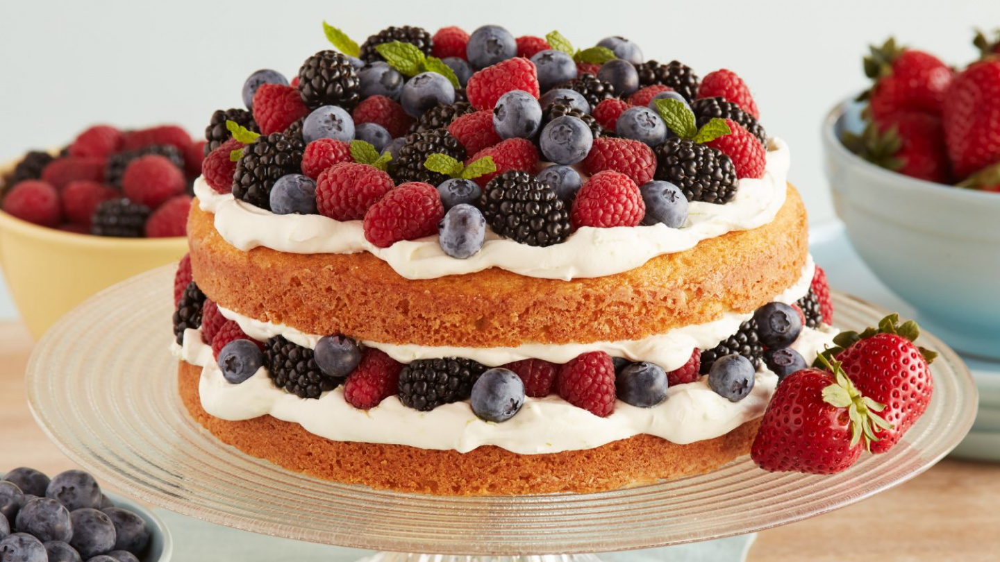

Onze taarten zijn zonder twijfel de beste, en hier is waarom: Hoogwaardige Ingrediënten: Onze taarten beginnen met de allerbeste ingrediënten. We selecteren zorgvuldig de meest verse en smaakvolle componenten, zoals sappige vruchten, rijke chocolade, en romige vullingen. Deze kwalitatieve basis legt de fundering voor de heerlijke smaak van onze taarten. Ambachtelijke Vakmanschap: Onze getalenteerde bakkers zijn meesters in hun ambacht. Ze hebben jarenlange ervaring en zijn vastbesloten om elk taartje tot in de perfectie te maken. Elk detail, van het kneden van het deeg tot het decoreren van de taart, wordt met uiterste precisie behandeld. Diversiteit in Smaak: Ons assortiment taarten is ongeëvenaard in diversiteit. Of je nu houdt van verfijnde, klassieke smaken of avontuurlijk bent en nieuwe combinaties wilt ontdekken, we hebben voor ieder wat wils. Onze taarten variëren van fruitige vlaaien tot decadente chocoladetaarten en alles daartussenin. Maatwerk: Wij begrijpen dat elke klant unieke smaakvoorkeuren heeft. Daarom bieden we ook maatwerk aan. Als je een specifieke taart in gedachten hebt voor een speciale gelegenheid, kunnen we deze voor je maken en personaliseren, zodat het precies aan jouw verwachtingen voldoet. Innovatie: We blijven constant innoveren en experimenteren met nieuwe recepten en smaakcombinaties. Onze bakkers zijn creatief en enthousiast over het ontwikkelen van nieuwe taarten die verrassen en verwonderen. Zo blijven we onze klanten steeds nieuwe smaakbelevingen bieden. Klanttevredenheid: Het allerbelangrijkste voor ons is de tevredenheid van onze klanten. We waarderen feedback en streven er altijd naar om de verwachtingen te overtreffen. Ons doel is om jou een onvergetelijke smaakervaring te bieden elke keer dat je een van onze taarten proeft. Kortom, onze taarten zijn de beste omdat we toegewijd zijn aan het leveren van ongeëvenaarde kwaliteit, omdat we vasthouden aan ambachtelijk vakmanschap, omdat we diversiteit in smaak omarmen, omdat we maatwerk aanbieden, omdat we blijven innoveren, en omdat we jouw tevredenheid boven alles stellen. We zijn er trots op dat we de beste taarten in de stad mogen maken en delen deze smaakvolle ervaring graag met jou.
